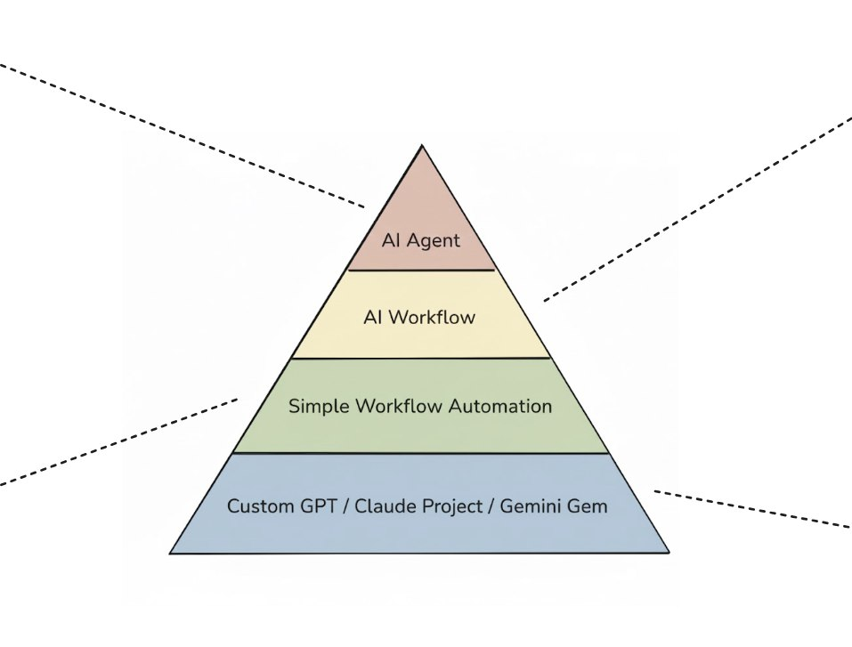

A Piramide de Automacao com IA
Entenda as 4 camadas de sistemas de IA e quando usar cada uma

A Piramide dos Sistemas de IA - Da base ao topo
A Estrutura da Piramide
Do mais simples ao mais complexo
A piramide representa os 4 niveis de complexidade em sistemas de automacao com IA. Quanto mais alto na piramide, maior a complexidade, custo e manutencao — mas tambem maior a autonomia.
A regra de ouro:
"Sempre comece pela base da piramide e suba apenas quando necessario. A solucao mais simples que resolve o problema e sempre a melhor."
Custom GPTs / Projetos na Nuvem / Gems
Base da piramide - Mais simples
O que sao:
- • Assistentes conversacionais configurados
- • Instrucoes especificas + base de conhecimento
- • Tom e voz personalizados
- • Como um "estagiario que conhece a empresa"
Caracteristicas:
- ✓ Reativos - so funcionam quando interagem
- ✓ Baixa complexidade e custo
- ✓ Humano sempre no loop
Quando usar: Tarefas repetitivas com necessidade de revisao humana, processos criativos ou iterativos. Ex: gerar guias de setup para videos do YouTube com ajustes manuais.
Automacao Simples (sem IA)
Fluxos baseados em regras fixas

O que e:
- • Fluxos automaticos com regras if/then
- • Zero raciocinio ou interpretacao
- • Totalmente previsivel e deterministico
Caracteristicas:
- ✓ Executa sempre os mesmos passos
- ✓ Roda em background (sem humano)
- ✓ Custo zero de tokens de IA
💡 Insight importante:
Cerca de 50% das automacoes em empresas nao precisam de IA. Gatilhos por horario, status "sucesso/erro", finalizacao de gravacao - tudo isso pode ser feito sem IA.
AI Workflows
Fluxo fixo com decisoes inteligentes

O que sao:
- • Fluxos com ordem fixa de passos
- • IA em pontos especificos do fluxo
- • Estrutura sempre igual (1 → 2 → 3 → ...)
A IA entra para:
- ✓ Classificar conteudo
- ✓ Interpretar texto
- ✓ Tomar decisoes pontuais
Definicao-chave:
"Caminho fixo com decisoes inteligentes."
Exemplo: Classificacao automatica de e-mails (suporte, financeiro, prioridade). O caminho e sempre o mesmo, mas a decisao de classificacao usa IA.
AI Agents
Topo da piramide - Mais complexo

O que sao:
- • Sistemas autonomos, orientados a objetivos
- • Nao seguem um caminho fixo
- • Recebem objetivo e "descobrem" como alcancar
Capacidades:
- ✓ Perceber o ambiente
- ✓ Decidir quais ferramentas usar
- ✓ Escolher ordem de execucao
- ✓ Repetir passos e lidar com excecoes
Exemplo: Agente de marketing que recebe pedidos via Telegram e decide: criar texto, criar/editar imagens, consultar banco de dados, repetir etapas se necessario.
💡 Insight importante:
Mesmo agentes funcionam melhor quando suas ferramentas internas sao workflows previsiveis. Autonomia no alto nivel, previsibilidade no baixo nivel.
Comparativo das Camadas
| Camada | Complexidade | Custo | Autonomia | Humano |
|---|---|---|---|---|
| Custom GPT | Baixa | Baixo | Nenhuma | Sempre no loop |
| Automacao | Baixa | Zero IA | Previsivel | Opcional |
| AI Workflow | Media | Medio | Decisoes pontuais | Opcional |
| AI Agent | Alta | Alto | Total | Supervisao |
Resumo do Modulo
Principio-chave
"Sempre comece pela base e suba apenas quando necessario."